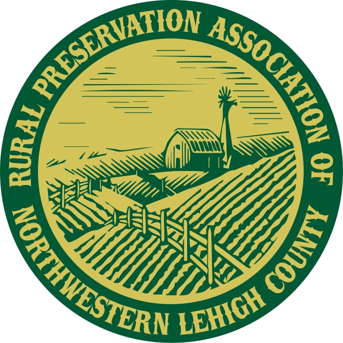

Farmland Advocacy
We speak up for policies that prioritize farmland preservation and rural land use planning.

Our community is committed to preserving farmland, supporting local farmers, and safeguarding the open spaces that define rural Northwestern Lehigh County.
Join the effortRural Preservation Association is a locally focused nonprofit organization dedicated to preserving farmland and rural character throughout Lehigh County, Pennsylvania. We collaborate with landowners, municipalities, and community members to protect agricultural land from development and maintain the region's cultural heritage.
To preserve farmland and rural landscapes in Lehigh County through education, advocacy, land protection tools, and community engagement.
We speak up for policies that prioritize farmland preservation and rural land use planning.
Local workshops, community events, and resources help residents understand the value of farmland preservation.
We connect landowners with legal, financial, and conservation tools to keep their land farming.
Your support helps protect farmland and preserve the rural landscape across Lehigh County.
Help sustain our efforts with an annual membership and stay informed on local preservation issues.
Join events, support outreach, and help spread the word about farmland preservation.
Your contributions make it possible to provide resources to farmers and protect open space.
Rural Preservation Association of Northwestern Lehigh County
Germansville, Pennsylvania
Email: rural.preservation@gmail.com
Facebook: facebook.com/rpanlc
Stay connected with local updates and preservation news.